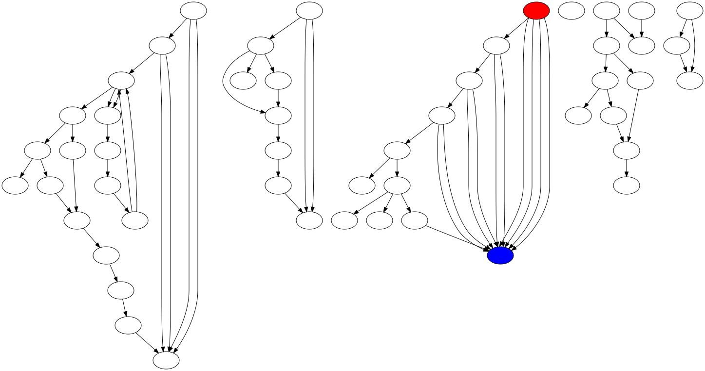

function prueba():void
- Complejidad ciclomática V(G): 9
- Puntos función: 7472046701
- Resumen:
- Variables declaradas: 20
- Líneas de código efectivas: 47
- Número de parámetros esperados: 0
- Número de llamadas a funciones: 21
- Grafo de llamadas a funciones:

function main():void
- Complejidad ciclomática V(G): 1
- Puntos función: 2
- Resumen:
- Variables declaradas: 0
- Líneas de código efectivas: 1
- Número de parámetros esperados: 0
- Número de llamadas a funciones: 1
- Grafo de llamadas a funciones:

PUNTOS PROGRAMA COMPLETO
- Complejidad ciclomática V(G): 20
- Puntos función: 7472046703
- Resumen:
- Variables declaradas: 20
- Líneas de código efectivas: 48
- Número de parámetros esperados: 0
- Número de llamadas a funciones: 22
- Grafo de complejidad ciclomática:

- Grafo de llamadas a funciones: